November 2019 (version 1.41)
Update 1.41.1: The update addresses these issues.
Downloads: Windows: User System | Mac: Intel | Linux: deb rpm tarball snap
Welcome to the November 2019 release of Visual Studio Code. There are a number of updates in this version that we hope you will like, some of the key highlights include:
- Compact folders in Explorer - Single child folders collapsed by default.
- Edit left side of diff views - You can now edit both files in a difference view.
- Update search results while typing - Global search results update while you type.
- Problems panel improvements - Filter by problem type and limit output to the active file.
- Minimap highlights errors and content changes - Quickly locate problems and changes in your file.
- Terminal minimum contrast ratio - Set preferred contrast ratio for increased visibility.
- HTML mirror cursor in tags - Automatic multi-cursor in matching HTML tags.
- Optional chaining in JS/TS - Use the
?.operator to simplify working with nested structures. - Extract interface refactoring - Quickly extract an inline type to a TypeScript interface.
- Dev Containers extension - Better support for opening repositories in Docker containers.
If you'd like to read these release notes online, go to Updates on code.visualstudio.com.
Insiders: Want to see new features as soon as possible? You can download the nightly Insiders build and try the latest updates as soon as they are available. And for the latest Visual Studio Code news, updates, and content, follow us on Twitter @code!
Workbench
Compact folders in Explorer
In the File Explorer, we now render single child folders in a compact form. In such a form, single child folders will be compressed in a combined tree element. Useful for Java package structures, for example.
Setting explorer.compactFolders controls this behavior. By default, this setting is turned on.

Edit left side in diffs
If you compare two editors that are editable (for example, from the File Explorer by comparing two files or running a global Search & Replace), the left-hand side is now also editable and can be saved (⌘S (Windows, Linux Ctrl+S)).
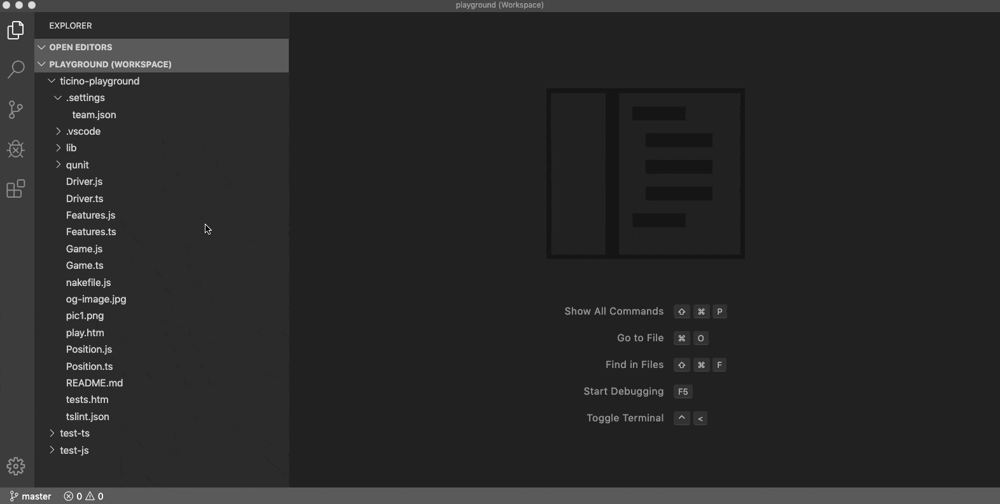
Note: You can enable Auto Save (File > Auto Save) if you are tired of pressing ⌘S (Windows, Linux Ctrl+S).
Save from Peek editors
If you bring up a Peek view and type into it, you can now save changes via ⌘S (Windows, Linux Ctrl+S), if the focus is inside that embedded editor.
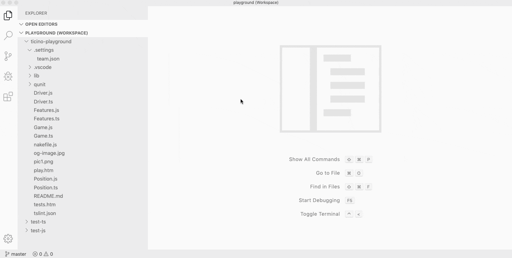
Problems panel
More Filters
More predefined filters were added to the Problems panel. You can now filter problems by type (errors, warnings, and information) and also see problems scoped to the current active file.

Theme: GitHub Sharp Dark, Font: FiraCode
Show current problem in Status bar
You can now configure VS Code to show the current problem message in the Status bar. This allows you to see the summary of the selected problem in the active file without any additional keyboard or mouse gestures.
Note: Enabling this feature needs enabling the setting problems.showCurrentInStatus.
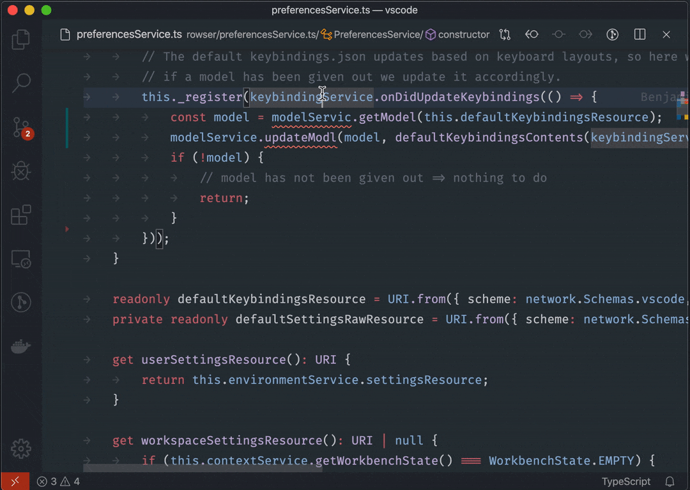
Theme: GitHub Sharp Dark, Font: FiraCode
Flexible filter box layout
The filter box in the Problems panel now adjusts its position according to the panel's position and size.

Theme: GitHub Sharp Dark, Font: FiraCode
Improved font rendering (Windows, Linux)
When we updated to Electron 6 last milestone, many users reported that font rendering regressed for them. Specifically, fonts did not render as smoothly as they used to. We immediately addressed the issue in the editor and the fix was made available in a 1.40 recovery release. However, other areas in the workbench still suffered from less than ideal font rendering.
In this release, we improved font rendering in more parts of the workbench (for Windows and Linux). The screenshots below show a before and after comparison (zoomed in to show the difference). In particular, many tree and list elements of the workbench were rendered using greyscale antialiasing and they now render with subpixel antialiasing.
Before (left) and after (right):
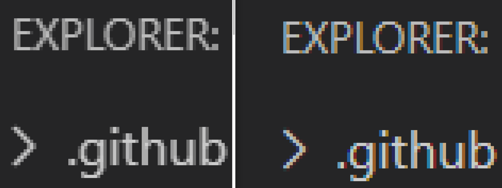
We plan to improve font rendering in even more parts of the workbench. You can check out this query of text rendering issues to view progress.
Faster read/write file performance for remote scenarios
Reading and writing files (from the text editor) should now be faster for scenarios where the file system is remote and the latency is high (for example when using VS Code in a browser with a slow connection or being connected to a remote host that is not in the same region). We switched to a stream-based implementation for reads and writes that greatly reduces communication overhead.
Search
Update search results as you type
In full text search, results will now update as you type. This is especially helpful in scenarios like constructing complicated Regular Expression queries, where fast feedback on a query can help you to write the RegEx.
Here, the instant feedback helps in constructing a RegEx Find and Replace query for adopting TypeScript's optional chaining syntax:
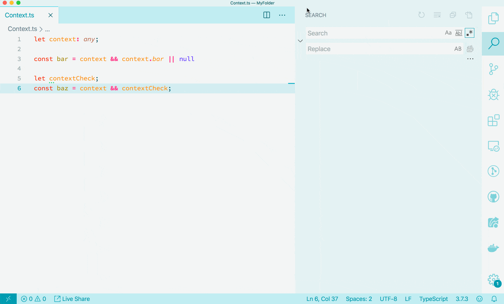
Theme: Noctis Hibernus, Font: Hasklig
Note: This feature can be disabled by setting search.searchOnType to false, and the delay between typing and searching can be adjusted with search.searchOnTypeDebouncePeriod, which defaults to 300 ms.
Add cursors to search results
We've added a command to add cursors to all matches of a text search. With focus on a file's search results in the Search view, you can press ⇧⌘L (Windows, Linux Ctrl+Shift+L) to edit all matches in that one file simultaneously. This is the same keyboard shortcut used when searching inside a single editor with the Find widget.

Expand all search results by default
Previously, if a full text search returned more than 10 results in a single file, it would appear collapsed in the Results tree. However, this sometimes made finding a particular result difficult, so with this release all results will appear expanded.
You can set search.collapseResults to auto to revert to the old behavior.
Editor
Minimap decorations for errors, warnings, and content changes
Errors and warnings are now highlighted inline in the minimap (code overview). You can change the color of these decorations with the new minimap.errorHighlight and minimap.warningHighlight theme colors.
Below you can see the minimap highlighting a subtle missing comma typo:
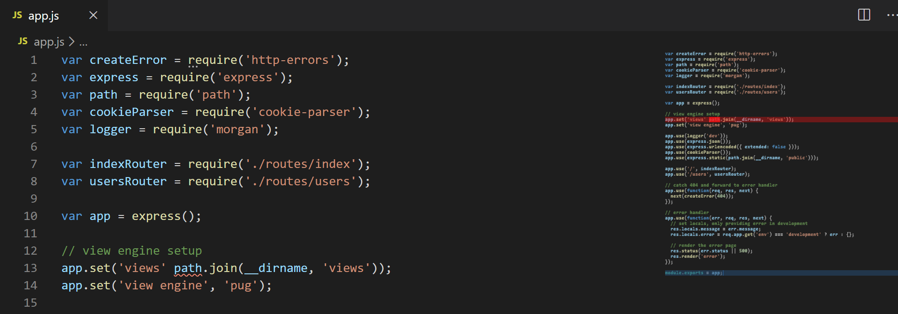
Content changes decorations are also shown in the gutter of the minimap:
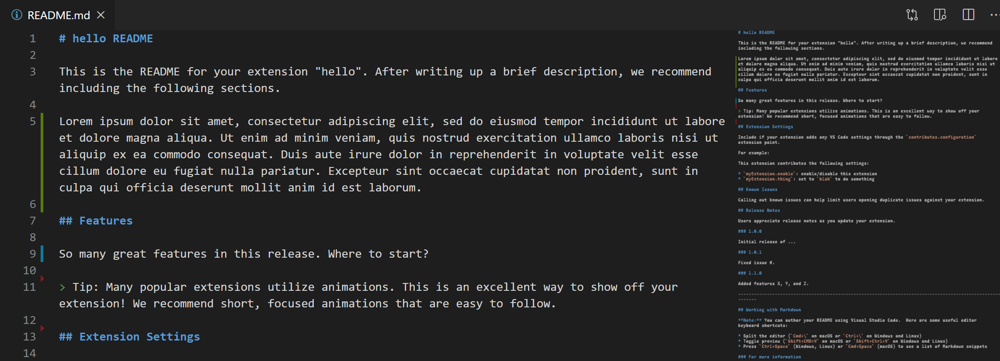
You can modify the content change colors with:
minimapGutter.addedBackgroundminimapGutter.modifiedBackgroundminimapGutter.deletedBackground
You can change the visibility of source control decorations with the scm.diffDecorations setting, which has the values:
all- Show source control diff decorations in all locations.gutter- Only show in the left side editor gutter.minimap- Only show in the minimap gutter.overview- Only show in the overview ruler.none- Do not show the diff decorations.
Code navigation alternate commands
VS Code used to do nothing when selecting Go to Definition while already at the definition. With this release, alternate commands can be executed instead. For instance, Go to Definition can be mapped to run Go to References.
This is customized via the editor.gotoLocation.alternativeDefinitionCommand setting. For example, you can make the alternate for Go to Definition be Go to Declaration and vice versa. You can leave the setting empty if you prefer the old behavior.
Peek, Go to, and Find All commands
Each Peek command now has a Go to counterpart. For instance, there are now both Peek Implementations and Go to Implementations. The Peek view doesn't change the current editor and allows for a quick in-place look at source code.
The video below shows using Peek Implementations to see all implementations of the ICommandService interface in a Peek view:

Theme: GitHub Sharp, Font: FiraCode
In contrast, Go to Implementations is for navigation and gets you to an implementation quickly.
The video below (using the "editor.gotoLocation.multipleImplementations": "goto" setting) navigates to all implementations of the ICommandService interface by repeatedly pressing F12:

Theme: GitHub Sharp, Font: FiraCode
Last but not least, similar to the Find All References command, there is now Find All Implementations. It presents the implementations as a stable list to the side of the editor. This can be used as a TODO list, for example when performing a refactoring that affects all implementations of an interface.

Theme: GitHub Sharp, Font: FiraCode
Language-specific filtering for breadcrumbs and Outline view
Last milestone, we have added the capability to filter certain types, like variables, from the Outline view and breadcrumbs navigation. This release refines this features and allows language-specific filtering, for example don't show TypeScript variables but do show JavaScript variables.
Below you can see how the value constant is displayed in the Outline view for the JavaScript file but not the TypeScript version.
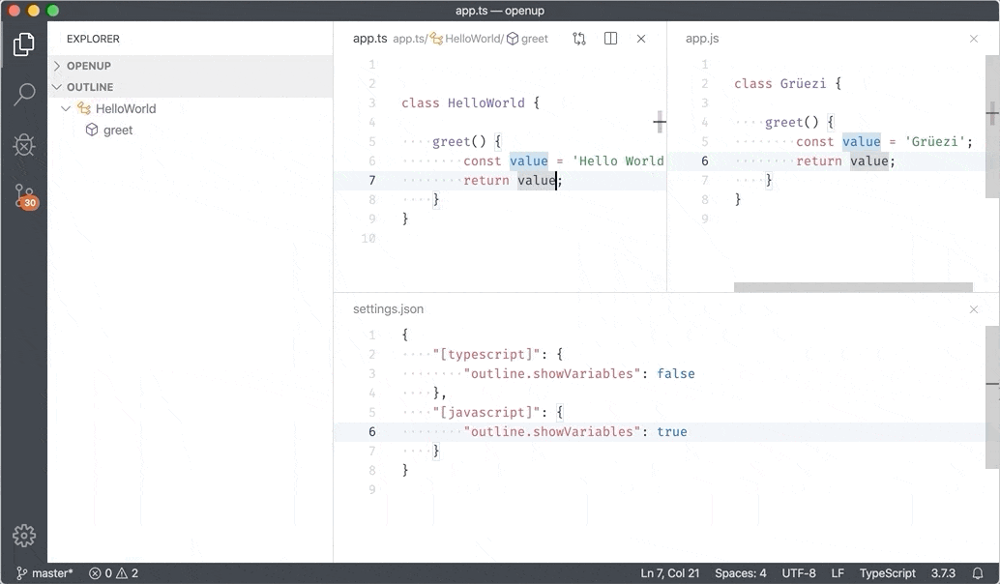
Theme: GitHub Sharp, Font: Fira Code
IntelliSense keyboard shortcuts on macOS
IntelliSense is usually triggered via Ctrl+Space. On macOS however, this keyboard shortcut is taken by the operating system when multiple input sources are configured. This often leads to confusion and users thinking IntelliSense is broken.
There are now two ways to handle this:
- Use the new Alt+Escape keyboard shortcut that we have added for macOS.
- Disable Input Source switching via Ctrl+Space in your macOS preferences through Preferences > Keyboard > Shortcuts > Input Sources.
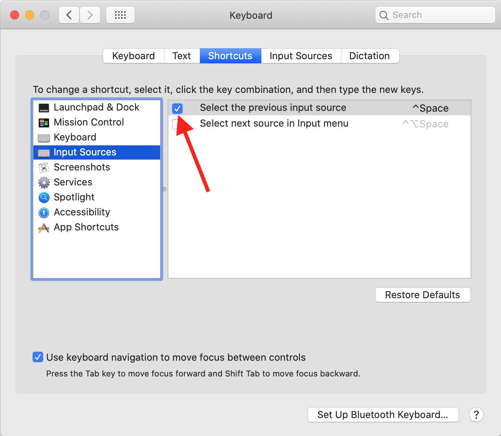
Screen reader output
There is a new setting editor.accessibilityPageSize that controls the number of lines in the editor that can be read out by a screen reader at once. Note that this has performance implications for numbers larger than the default of 10.
If you use the screen reader Say All command, we recommend setting editor.accessibilityPageSize to 100 or 1000. Next milestone, we will look into changing the default value of this setting.
New bracket matching option
It is now possible to configure "editor.matchBrackets": "near" to get the old behavior of highlighting matching brackets only when the cursor is on either side of a bracket. The default is always, which highlights the matching brackets enclosing the current cursor position.
New auto indentation option
The setting editor.autoIndent can now take different values. This setting impacts multiple features, such as pressing Enter, pressing Tab, or when indenting and unindenting lines. You can think of the setting like a "slider" that becomes more and more opinionated:
"none": Pressing Enter will insert\nand nothing more."keep": Pressing Enter will keep the indentation of the current line."brackets": All of the above and special logic around language-specific brackets."advanced": All of the above and respecting language-specific rules that are defined viaonEnterRules."full"(default): All of the above and respecting language-specific rules that are defined viaindentationRules.
Code Action menu keyboard shortcuts
The Code Action and Refactoring menus now display custom keybindings, if they exist.
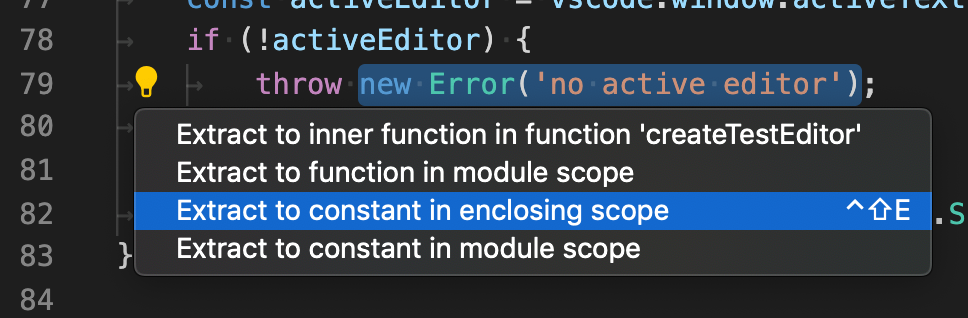
Integrated terminal
Minimum contrast ratio
Applications working with colors in the terminal can be tricky and they can use the following colors for text:
- The default foreground color
- A palette of 16 colors as defined by the terminal theme
- A set of 240 fixed colors
- Any RGB color (16 million)
The problem is the application doesn't know what the default background color or foreground color is and whether it will have good contrast with colors used by the application. To solve this problem, the terminal can now change the foreground color of text dynamically to meet a specified contrast ratio.
Set the foreground color to the desired contrast ratio ranging from 1 to 21:
// 4.5 is recommended for baseline website accessibility
"terminal.integrated.minimumContrastRatio": 4.5
Terminal colors will increase or decrease luminance until either the contrast ratio is met or the foreground becomes #000000 or #ffffff.
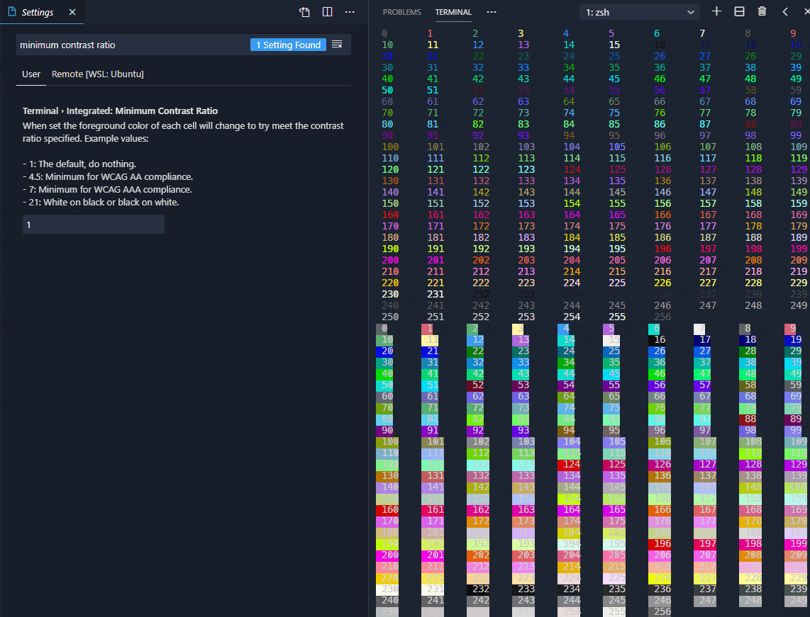
Theme: Sapphire, Font: Hack
New experimental WebGL renderer
A new WebGL-based renderer is available for the terminal, which boasts performance gains of up to 900%* compared to the old canvas-based approach.
You can opt in to use the new renderer with this setting:
"terminal.integrated.rendererType": "experimentalWebgl"
The speed improvements are attributed to many things but here are the highlights:
- WebGL allows us to talk more directly to the GPU, as opposed to going via the web platform's
CanvasRenderingContext2DAPI. - The renderer deals almost exclusively with numbers and typed arrays, which are extremely fast. Object and array creation is also kept to a minimum to avoid unnecessary garbage collection.
- All characters are now cached in a texture atlas as opposed to just ASCII characters with a limited set of styles. This means repeated drawing of the same character is much faster.
We observed rendering of frames varying wildly based on a user's hardware/environment with the canvas renderer. Each frame would typically take anywhere from 1 ms to 40 ms but could reach to over 200 ms in extreme cases, where hardware issues were a factor. So far, WebGL seems much more consistent, typically sitting in the 0.2 ms to 2 ms range:
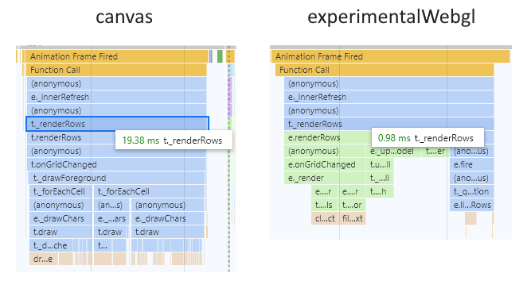
Reliability is one of the things we expect to improve once this is integrated. With the canvas renderer, the browser would try to be clever and fall back to rendering on the CPU if there were problems with the GPU/canvas, but we never want that to happen as we have a DOM-based renderer, which is much more suited for that. With WebGL, it should either work as expected or fail hard (a WebGL context cannot be acquired), in which case we can fall back to the DOM renderer.
Since rendering takes so much less time, the CPU is freed up to focus on parsing incoming data, which results in more frames rendered and commands that run faster. The following performance data was generated from running ls -lR inside the vscode repository:
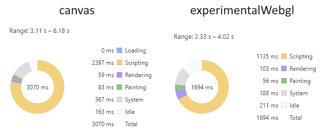
The new renderer also fixes a nasty bug with the canvas renderer, where characters would get their sides clipped when they are larger than the cell size. This issue was most commonly observed with certain fonts on Linux with underscores.
* More info on benchmarks available at xtermjs/xterm.js#1790
Source Control
Git: Relative paths in git.ignoredRepositories
The git.ignoredRepositories setting now supports relative paths, which are useful when you're configuring workspace settings and you'd like to ignore certain repositories in VS Code.
Git: Adoption of FileSystemProvider
The Git extension now uses the FileSystemProvider API which, besides fixing certain encoding issues, provides a more performant and more reliable way of exposing older versions of your files, from a Git repository.
Languages
HTML mirror cursor
VS Code now adds a "mirror cursor" when you are editing HTML tags. This behavior is controlled by the setting html.mirrorCursorOnMatchingTag, which is on by default.
This feature works by adding a multi-cursor to the matching tag when your cursor moves into an HTML tag name range. Just like in multi-cursor mode, you can use word-wise deletion or word-wise selection. The mirrored cursor is removed when you move your cursor outside the tag name range.
One special case is entering Space when the cursor is at the end of the opening tag, for example at the end of a div like <div|></div|>. In this case, VS Code removes the inserted space after the closing tag name and exits mirror cursor mode, so you can continue to edit HTML attributes.

Theme: Nord, Font: Input Mono
HTML rename tags
You can now use F2 to rename the opening/closing tag pairs in HTML.
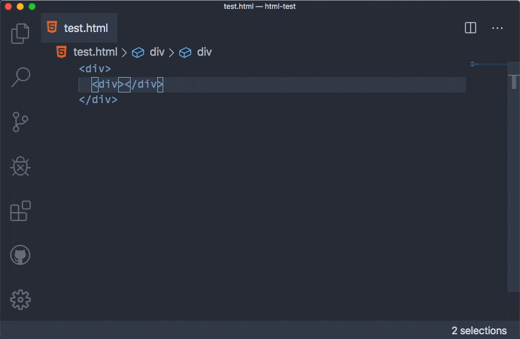
Ranking of autocompleted CSS properties
CSS autocompletion now ranks properties by their popularity:
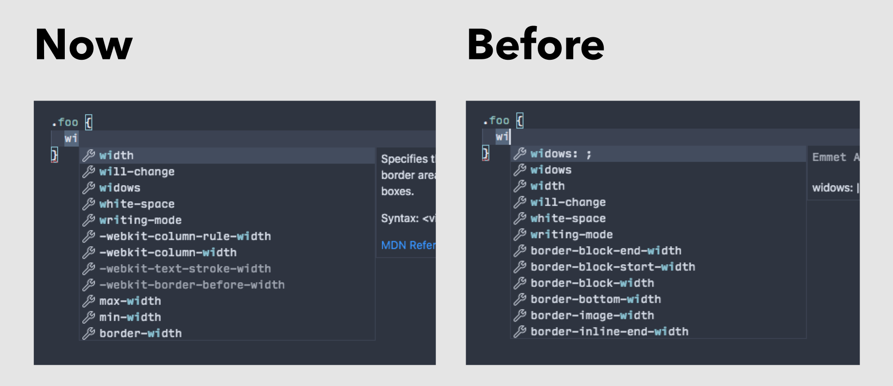
The usage data is sourced from ChromeStatus.org.
Sass module support
Sass recently introduced a new module system.
We have added syntax highlighting support, as well as language feature support, for Sass modules in SCSS files. The language features include:
- Auto completion of
@useand@forward. - Path completion for
@useand@forwardpath. - Auto completion of Sass built-in modules such as
sass:mathandsass:color. - Document link for
@useand@forwardimport paths.

JSON
To avoid performance issues with large JSON files, JSON language support now has an upper limit on the number of folding regions and document symbols it computes (for the Outline view and breadcrumbs). By the default, the limit is 5000 items, but you can change the limit with the setting json.maxItemsComputed.
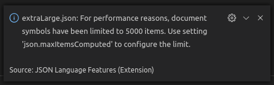
TypeScript 3.7
VS Code now ships with TypeScript 3.7.3. This major update brings some TypeScript language improvements - including optional chaining, nullish coalescing, and assertion functions - as well as some new tooling features for both JavaScript and TypeScript. As always, this release also includes a number of important bug fixes.
You can read more about the TypeScript 3.7 features on the TS 3.7 blog post.
Optional chaining support for JavaScript and TypeScript
Thanks to TypeScript 3.7, VS Code now supports option chaining out of the box for both JavaScript and TypeScript. This includes syntax highlighting and IntelliSense:
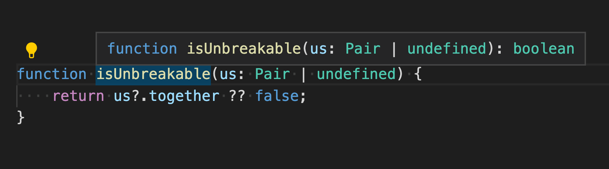
Additionally, VS Code can automatically insert a ?. when you accept a completion on an optional property:
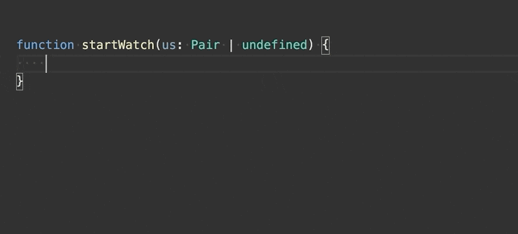
Automatic insertion of ?. depends on strict null checking being enabled. Automatic ?. insertion can be disabled with the "typescript.suggest.includeAutomaticOptionalChainCompletions" or "javascript.suggest.includeAutomaticOptionalChainCompletions" settings.
Extract interface refactoring for TypeScript
The new Extract to interface refactoring lets you quickly extract an inline type to an interface so that it can be reused.
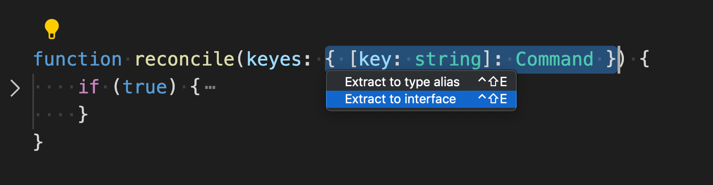
Below you can see that the 'Neural' interface has been extracted out of 'keyes':
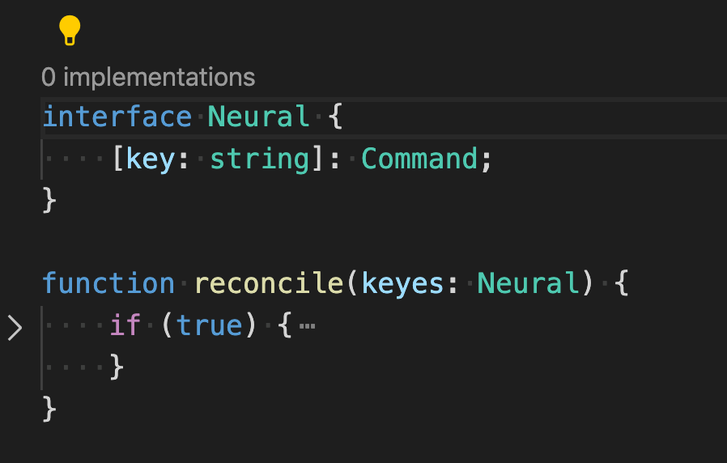
Semicolon formatter options for JavaScript and TypeScript
The new javascript.format.semicolons and typescript.format.semicolons formatting settings let you control how the formatter handles semicolons in JavaScript and TypeScript files.
Valid semicolon format settings values are:
ignore- Does not add or remove semicolons (default).insert- Insets semicolons at statement ends.remove- Remove unnecessary semicolons.
Uncalled function checks
VS Code will now alert you if you forget to call a function in a conditional.
Consider the following TypeScript snippet:
import * as fs from 'fs';
fs.stat('/path/to/file', function(err, stats) {
if (stats.isDirectory) {
handleDirectory(stats);
}
});
The example above uses the Node.js fs.stat API to get information about a file. But there's a bug! .isDirectory is actually a function, not a property! This means that handleDirectory will be called on every file, not just directories as intended, as the function isDirectory is defined and evaluates to true.
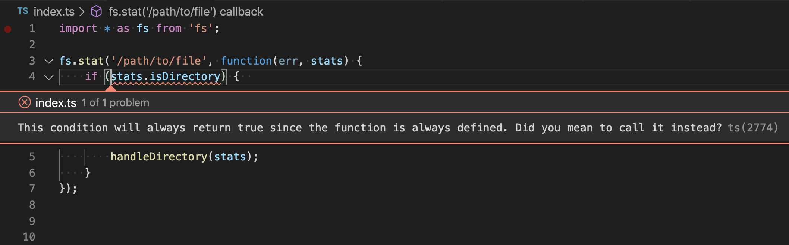
Note that you will only see this diagnostic when strict null checking is enabled.
Debugging
Debug START view
We have introduced a new debug START view to make it easier for users to start and configure debugging in a new workspace. Based on the active file, we will choose the appropriate debug extension and make it possible to debug or run your application. For more elaborate debug and run configurations, it is still best to configure a launch.json file.
Below you can see quickly starting to debug an Express JavaScript application and then creating a launch.json file if more control is needed.
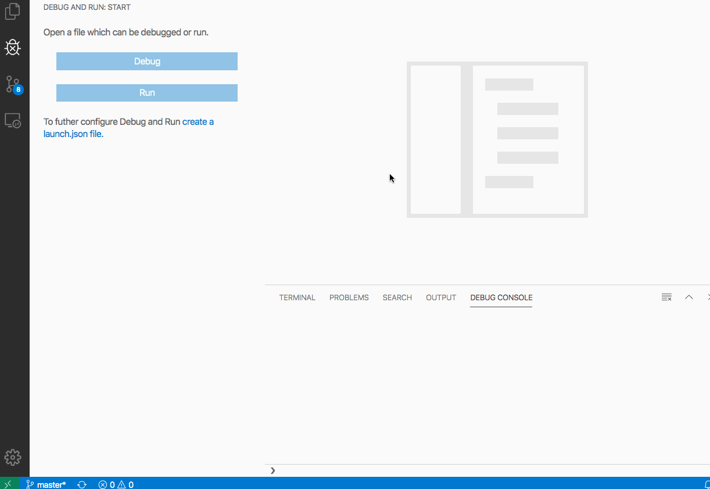
Restart frame as an inline action in the CALL STACK view
To improve the discoverability of the Restart Frame action, there is now an inline action in the CALL STACK view visible on hover. Restarting frames is a handy way to rerun the preceding source code after a breakpoint is hit. If the debug extension does not support restarting frames, this action is not shown.
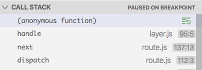
Debug console shows input and output
In order to better distinguish input and output in the Debug console, we have added input > and output < decorations to the left.
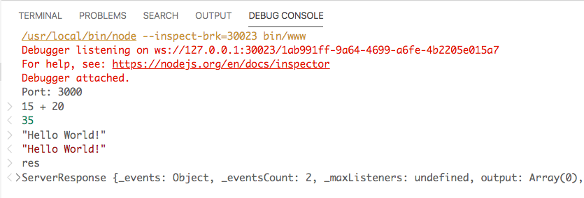
Inline breakpoint display
A new setting debug.showInlineBreakpointCandidates controls whether inline breakpoints candidate decorations are shown in the editor while debugging. By default, they are visible.
Preview features
Preview features are not ready for release but are functional enough to use. We welcome your early feedback while they are under development.
Search Editor
In this milestone, we've started work on showing search results in a dedicated editor. This provides more space to view search results and allows you to maintain multiple collections of search results simultaneously.
With this release, in a search editor you can:
- Navigate to results using Go to Definition family commands, including Peek Definition and Open Definition to Side.
- Rerun a search to update the list of results.
- View source code lines surrounding a result.
- Persist results to disk to be referenced later or even tracked in source control.
We will continue to add functionality and increase usability in the coming releases.
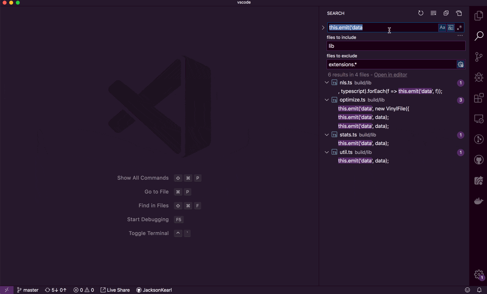
Theme: A Touch of Lilac, Font: Hasklig
Note: You can preview this feature by setting search.enableSearchEditorPreview to true.
Call Hierarchy view
The call hierarchy API is available in Stable and language extension authors are busy implementing it, so we have added a Call Hierarchy view. This complements the Peek Call Hierarchy view and shares the same Side bar view as Find All References and Find All Implementations. Once a language extension supports the call hierarchy API, you will be able to select Show Call Hierarchy from the context menu or the Command Palette to see the view:
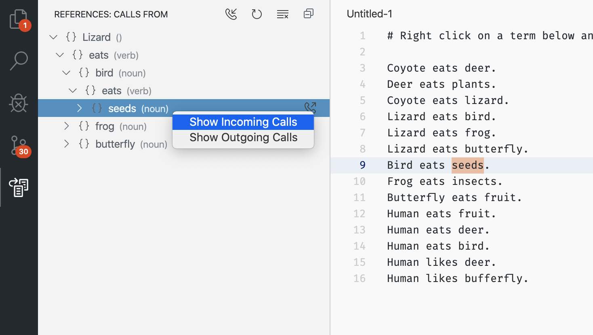
Theme: GitHub Sharp, Font: FiraCode
The Call Hierarchy view allows you to drill into the callers from and calls of a symbol. It highlights calls in the active editor, allows reparenting the view from any children, and it keeps a history of previous runs.
JavaScript Debugger
We're working on a new debugger for Node.js and Chrome. You can install the nightly extension js-debug-nightly, and use it as a drop-in replacement by updating your settings to add:
{
"debug.chrome.useV3": true,
"debug.node.useV3": true
}
You should not need to change your existing launch configurations in order to use the new debugger.
The debugger brings an assortment of new features, such as the ability to debug and step through webworkers:
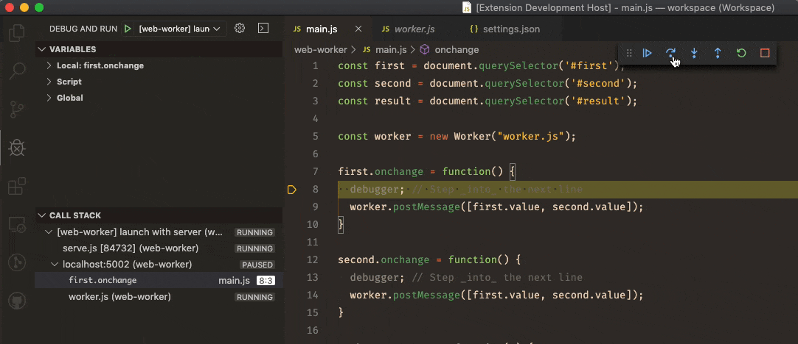
Theme: Earthsong, Font: Fira Code
...debug npm scripts with no extra configuration or flags...
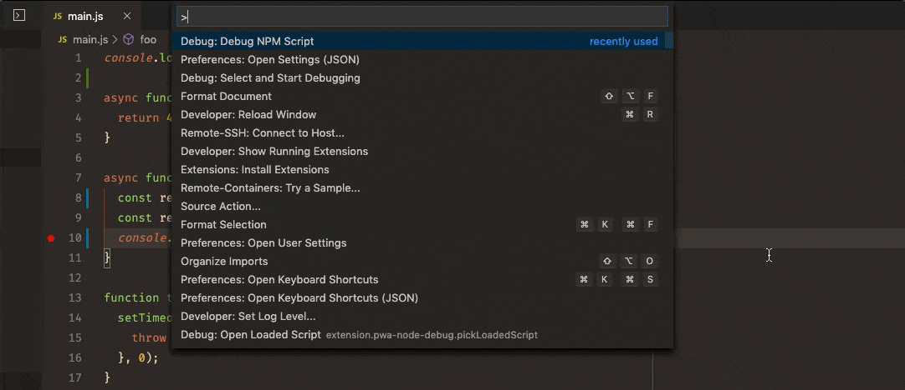
...and more! If you run into problems, please file an issue.
Contributions to extensions
Remote Development
Work continues on the Remote Development extensions, which allow you to use a container, remote machine, or the Windows Subsystem for Linux (WSL) as a full-featured development environment.
Feature highlights in 1.41 include:
- Dev Containers: Easier to try out sample repositories (for example vscode-remote-try-python) in a container.
- Dev Containers: Improved performance when creating a container and new options for
devcontainer.json. - WSL: Support on Windows 10 ARM-based PCs such as Surface Pro X.
- Remote Explorer can now scope available views to specific remote types.
You can learn about new extension features and bug fixes in the Remote Development release notes.
You can also read a recent blog post about Inspecting Containers with VS Code and try the updated Using C++ and WSL in VS Code tutorial.
ESLint
Improvements to the ESLint extension:
- Better support for ESLint 6.x - In most cases, it shouldn't be necessary to configure working directories when using ESLint 6.x.
- Improved TypeScript detection - As soon as TypeScript is correctly configured inside ESLint, you no longer need additional configuration through VS Code's
eslint.validatesetting. The same is true for HTML and Vue.js files. - Glob working directory support - Projects that have a complex folder structure and need to customize the working directories via
eslint.workingDirectoriescan now use glob patterns instead of listing every project folder. For example,code-*will match all project folders starting withcode-. In addition, the extension now changes the working directory by default. You can disable this feature with the new!cwdproperty. - Improved Auto Fix on Save - Auto Fix on Save is now part of VS Code's Code Action on Save infrastructure and computes all possible fixes in one round. It is customized via the
editor.codeActionsOnSavesetting. The setting supports the ESLint specific propertysource.fixAll.eslint. The extension also respects the generic propertysource.fixAll.
The setting below turns on Auto Fix for all providers including ESLint:
"editor.codeActionsOnSave": {
"source.fixAll": true
}
In contrast, this configuration only turns it on for ESLint:
"editor.codeActionsOnSave": {
"source.fixAll.eslint": true
}
You can also selectively disable ESLint via:
"editor.codeActionsOnSave": {
"source.fixAll": true,
"source.fixAll.eslint": false
}
vscode-scss
The vscode-scss extension offers cross-file language support for SCSS variables, mixins, and functions. In this milestone, we helped its development for a new release, 0.8.0.
The new version improves:
- Better import path resolution
- Color preview for autocompleted color variable
- Better performance
Extension authoring
Figma design toolkit
We've created a Figma design toolkit to better help extension authors design experiences for their extensions. Check out the toolkit repo on GitHub that has instructions on how to access and use the toolkit.
Below is an example of some of the components included:
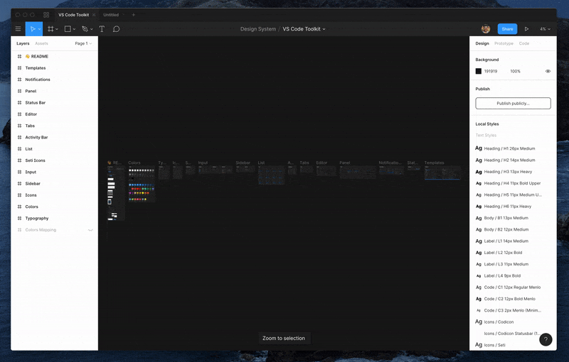
All components should be resizable and editable.
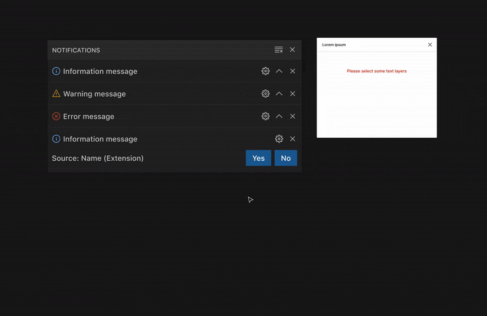
If you run into any problems or have any requests for certain components, please create an issue in the toolkit repo so that we can triage and track the requests.
Debug icon color tokens
We've added a set of new color tokens for the Debug view.
Debug toolbar:
debugIcon.startForegrounddebugIcon.continueForegrounddebugIcon.disconnectForegrounddebugIcon.pauseForegrounddebugIcon.restartForegrounddebugIcon.stepBackForegrounddebugIcon.stepIntoForegrounddebugIcon.stepOutForegrounddebugIcon.stepOverForegrounddebugIcon.stopForeground
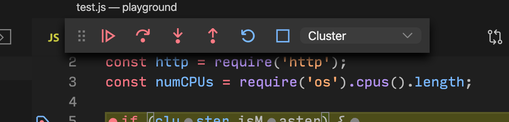
Theme: Min Dark, Font: Input Mono
Debug breakpoints:
debugIcon.breakpointForegrounddebugIcon.breakpointDisabledForegrounddebugIcon.breakpointUnverifiedForegrounddebugIcon.breakpointStackframeForegrounddebugIcon.breakpointCurrentStackframeForeground
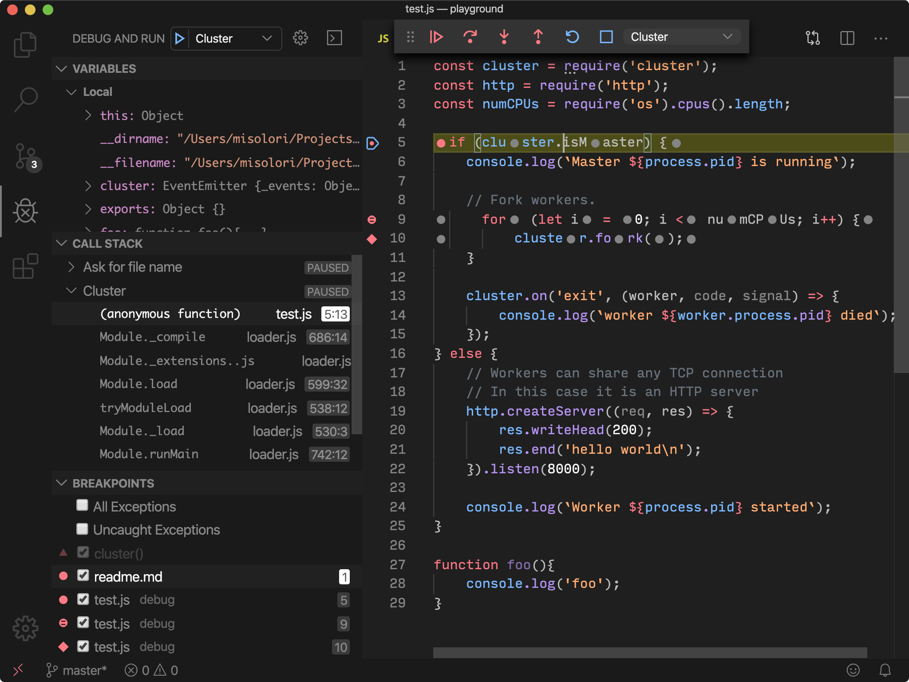
Theme: Min Dark, Font: Input Mono
Workspace file events
There are new events for when files and folders change:
vscode.workspace.on[Will|Did]CreateFilevscode.workspace.on[Will|Did]RenameFilevscode.workspace.on[Will|Did]DeleteFile
The events are fired when files are created, renamed, or deleted from the Explorer or from extensions via the vscode.workspace.applyEdit(WorkspaceEdit) API but not when files change on disk or when files are modified via the vscode.workspace.fs API.
A possible use case for these events is a language server, which might update the contents of a file before renaming it or update project files after deletion/creation of files.
SnippetString
The SnippetString type has now a builder-method for choice-elements.
Strict getWordRangeAtPosition
The TextDocument.getWordRangeAtPosition API is now more strict and instead of ignoring invalid regular expressions that result in empty string matches, it will throw an error.
Deprecated string type for extensionKind
Extension authors can use the extensionKind property in package.json to indicate where an extension should run in the remote case. In release (1.40), this value could be a string or an array. Starting with this release, this property only supports an array value and using a string is deprecated. See the Remote Development documentation for more information.
Convert DAP Sources to URIs
The VS Code extension API uses document URIs when referring to resources that can be opened in editors, whereas the Debug Adapter Protocol is based on Source descriptors. In this milestone, we've added an API for connecting the two worlds. The function debug.asDebugSourceUri creates a URI from a DAP Source object. This makes opening a DAP Source into a VS Code editor simple:
export async function openDAPSource(
session: vscode.DebugSession,
source: DebugProtocol.Source
) {
const uri = vscode.debug.asDebugSourceUri(source, session);
vscode.window.showTextDocument(vscode.workspace.openTextDocument(uri));
}
Proposed extension APIs
Every milestone comes with new proposed APIs and extension authors can try them out. As always, we are keen on your feedback. This is what you have to do to try out a proposed API:
- You must use Insiders because proposed APIs change frequently.
- You must have this line in the
package.jsonfile of your extension:"enableProposedApi": true. - Copy the latest version of the vscode.proposed.d.ts file into your project's source location.
Note that you cannot publish an extension that uses a proposed API. There may be breaking changes in the next release and we never want to break existing extensions.
CodeAction.disabled
VS Code encourages extensions to implement refactoring functionality using Code Actions. However it can be difficult for users to discover which refactorings an extension supports and to understand why a given refactoring is not available for a specific selection. The CodeAction.disabled API proposal aims to help extensions make their refactorings more discoverable.
The proposed .disabled property on CodeAction is a human readable string describing why a given Code Action is not possible. Here's an example of using .disabled in our CodeAction sample extension.
import * as vscode from 'vscode';
export class Emojizer implements vscode.CodeActionProvider {
public provideCodeActions(document: vscode.TextDocument, range: vscode.Range): vscode.CodeAction[] | undefined {
const action = new vscode.CodeAction(`Convert to ${emoji}`, vscode.CodeActionKind.Refactor.append('emojize'));
if (!this.isAtStartOfSmiley(document, range)) {
// Tell the user why our action is not available
action.disabled = 'Selection is not currently on a :)';
return [action];
}
action.edit = new vscode.WorkspaceEdit();
action.edit.replace(document.uri, new vscode.Range(range.start, range.start.translate(0, 2)), '😀');
return action;
}
...
}
If the user tries to apply a disabled Code Action through a keybinding, VS Code will display the .disabled error message to the user:
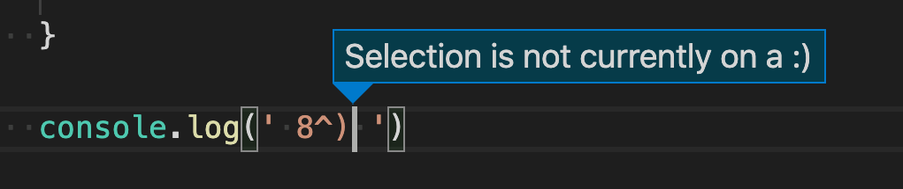
In addition, to help with discoverability, disabled Code Actions are shown as faded in the Refactor and Source Action context menus:
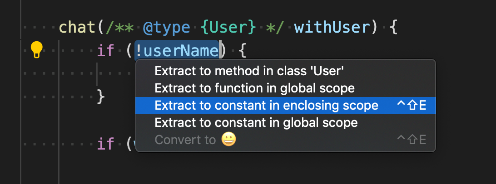
Note that disabled actions are not show in the top-level lightbulb menu.
If your extension uses Code Actions, please let us know if CodeAction.disabled is something that you would find useful and be able to implement.
Custom Editors editing capabilities
We continued to work on the custom editor proposal this iteration. As a reminder, custom editors are webview-based views that can be used in place of VS Code's normal text editor for specific file types. As of VS Code 1.41, Custom editors can now integrate with VS Code's Undo/Redo and Save functionality, which enables many interesting use cases including using them as visual and WYSIWYG editors.
You can find the current API proposal in vscode.proposed.d.ts and we have also put together some very simple extension samples that demonstrate using custom editors for text and for binary files.
If you are interested in custom editors, please share your feedback on the current proposal and let us know if you would be able to implement it.
Semantic tokens provider
We have added new proposed API for a semantic tokens provider. The new API allows extensions to provide additional token information to be used by the editor to enrich the TextMate based syntax highlighting.
Each semantic token annotates a range with a token type and any number of token modifiers. For example, type variable and modifiers member and modification would describe a write access to a member variable. The token types and modifiers are then used to add styles in the editor.
Styling can be configured in both color themes and user settings:
"editor.tokenColorCustomizationsExperimental": {
"variable.member": {
"foreground": "#35166d"
},
"*.modification": {
"fontStyle": "underline"
}
}
If you are interested in this feature, we would like to get your feedback regarding the current proposal and we would love to encourage experimentation and some early implementations.
A full sample is available in the vscode-extensions-samples repo.
Language Server Protocol
There is now proposed support for the call hierarchy view via LSP.
Browser support
Improved support for Firefox and Safari (macOS & iPadOS)
During this milestone, we focused on improving the experience of VS Code running in a browser when using Firefox or Safari. We fixed many issues to support both browsers (Firefox, Safari). On Firefox, we don't have full keyboard shortcut support yet due to upstream blockers and you can read more details at tracking issue #85252.
We also fixed many issues to enable basic VS Code functionality in Safari on iPadOS. Core UI elements are now accessible to touch and pointer devices. However, there are still major blockers related to predefined keybindings (Escape and Function keys), hovers, and touch friendly UI/UX. See issue #85254 for more information.
More features available running in a browser
Last milestone, we introduced support for running yarn web from our repository to set up VS Code running in the browser. This setup is still meant to be used for testing issues in browsers and not for development.
This milestone we added more features that can be tested:
- Debug
- Search
- Tasks
- Problems
Here is a video showing the new features in action:
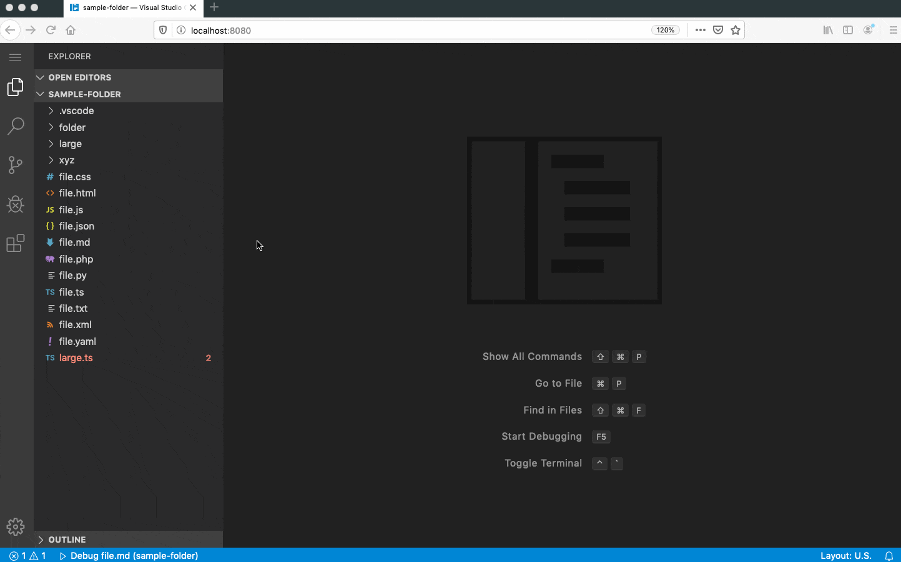
Note: Do not use this setup for any serious development. The intent is to allow the community to contribute changes back to VS Code to improve the overall experience in the browser.
Engineering
Insiders available in the yum repository
The Insiders build is now available in the yum repository and is automatically published just like with the apt repository. Follow the instructions on the website to set up the repo and install using sudo dnf install code-insiders.
Continuous build for Monaco Editor
This iteration we added continuous build and a test pipeline for the Monaco Editor. We build the Monaco Editor core from the VS Code repository main branch and perform sanity testing to catch potential bugs or unexpected breaking changes as early as possible.
Notable fixes
- 51039: Diff editor closes when closing left hand side editor in other tab
- 83746: Web: unable to drag and drop composites & views (activity bar, panel)
- 80026: gray attributes in launch.json are confusing, please remove them
- 83449: Accessibility: Ctrl+Right in accessibility mode (CursorWordAccessibilityRight) should jump to the beginning of next word, rather than the end
- 83753: Disabling console.debug.wordWrap strips newlines and whitespace
- 85086: Backreferences are not supported in global searching when
search.usePCRE2is disabled - 36219: Git: "Stage selected ranges" command changes encoding to UTF-8
Thank you
Last but certainly not least, a big Thank You! to the following folks that helped to make VS Code even better:
Contributions to our issue tracking:
- John Murray (@gjsjohnmurray)
- Andrii Dieiev (@IllusionMH)
- Alexander (@usernamehw)
- Danny Tuppeny (@DanTup)
Contributions to vscode:
- Amir Omidi (@aaomidi): Use isNaN instead of === NaN PR #83790
- Anirudh Rayabharam (@anirudhrb): Git: Fixed error when staging in empty repository PR #82995
- Anthony Dresser (@anthonydresser): Add filter to git hook (dev qol) PR #85159
- Jakub Chodorowicz (@chodorowicz): Improve Monokai theme for markdown files PR #85467
- DiamondYuan (@DiamondYuan): fix: fix typo CustomEditoInputFactory -> CustomEditorInputFactory PR #85090
- George Batalinski (@georgebatalinski): fix(aria-expanded) on submenues add aria prop PR #79775
- John Murray (@gjsjohnmurray)
- James Inkster (@Grommers00): fix #84080 added cntl-shift-c and cntl-shift-v to terminal PR #84438
- Vladislav Hadzhiyski (@hadzhiyski)
- Hung-Wei Hung (@hunghw): Fix #83818 - polish description in enablePreviewFromQuickOpen PR #83895
- Andrew Liu (@hypercubestart): fix #82457, markdown open, but unfocused source tab PR #85506
- Andrii Dieiev (@IllusionMH): Improve template literals support to match TS PR #80234
- Jason Ginchereau (@jasongin): Fix minor packaging issues in automation lib PR #83942
- Jean Pierre (@jeanp413)
- Don't encode image resource URI twice PR #85355
- Fixes Web: starting to drag a tab shows a scrollbar PR #83959
- Fixes image name including # fail to render PR #84334
- Adopt insert & replace in snippet provider PR #84206
- Fixes can't drag to select linkified text in the debug console PR #83956
- Fixes Web Firefox: dropping a file onto itself navigates the page PR #83962
- Fixes compressedNavigationController ends with outdated state after startup PR #86574
- Huáng Jùnliàng (@JLHwung): add
babel.config.jsonto JSON validation schema maps PR #83758 - Joan Rieu (@joanrieu): Document problemMatcher.fileLocation="autodetect" configuration option PR #83803
- John Combs (@jscombs91): Added force-device-scale-factor to command line args PR #84651
- Robert Jin (@jzyrobert)
- @MartinBrathen: Fix zoom on first click PR #83826
- @mltony: Make ctrl+right in accessibility mode to jump to beginning of the word PR #83450
- Nilesh Kevlani (@njkevlani): Command and Keybinding for adding multi cursor from search result PR #82510
- okmttdhr (@okmttdhr)
- @OneQuid: Fix opening image with '%' in the filename PR #84667
- Osk (@oskosk): Address typo in command identifier for installMissingDependencies PR #84056
- Peter Elmers (@pelmers): Add optional sortByLabel to QuickPick to control whether to re-sort results PR #77297
- Pieter Vanderpol (@petevdp)
- Samuel Bronson (@SamB): Allow trailing commas in jsconfig.json, too PR #85479
- Shizeng Zhou (@shizengzhou): Fix #84111 PR #84610
- @smilegodly: Added focusSearch() into clearSearchResults() and got rid of duplicate function PR #83617
- Konstantin Solomatov (@solomatov)
- 空雲 (@SoraKumo001): Make local and remote ports configurable PR #84958
- Sebastian Pahnke (@spahnke): monaco-editor: Find model by resource in SimpleEditorModelResolverService PR #85129
- 酷酷的哀殿 (@sunbohong): Support utf-8 encoding guessing PR #84504
- Tobias Fenster (@tfenster): implement filtering by marker type PR #83797
- Valentin Hăloiu (@vially): Add parent path to git clone command PR #85459
- Wojciech Buczek (@Wowol): Add support of relative paths for git.ignoredRepositories PR #83466
- ZHAO Jinxiang (@xiaoxiangmoe): Add .cjs to known JavaScript file extensions PR #85460
Contributions to language-server-protocol:
-
Bradley Walters (@bmwalters): Fix wrong client capabilities interface listed for document symbol PR #862
Contributions to vscode-css-languageservice:
- Piotr Błażejewicz (Peter Blazejewicz) (@peterblazejewicz): Fix linear gradient description. PR #198
- @wongjn
Contributions to debug-adapter-protocol:
- Ben Clayton (@ben-clayton): Update sdks.md PR #82
Contributions to vscode-chrome-debug-core:
- Elmi Ahmadov (@ahmadov): Fix reference error issue when setting a new value for property PR #546
Contributions to vscode-vsce:
- Alessandro Fragnani (@alefragnani): Ignore file via option PR #294
- James Inkster (@Grommers00): fixes #400 allow force to unpublish an extension PR #405
- Chris S. (@LaChRiZ): if package path is a directory, use default file name to write vsix PR #248
- Nate Drake (@ndrake): Set permissions on .vsce to 0600; fix for #230 PR #295
Contributions to localization:
There are over 800 Cloud + AI Localization community members using the Microsoft Localization Community Platform (MLCP), with over about 100 active contributors to Visual Studio Code. We appreciate your contributions, either by providing new translations, voting on translations, or suggesting process improvements.
Here is a snapshot of contributors. For details about the project including the contributor name list, visit the project site at https://aka.ms/vscodeloc.
- Bosnian (Latin, Bosnia and Herzegovina): Sead Mulahasanović, Ismar Bašanović, Adnan Rizvan.
- Danish: Lasse Stilvang.
- Dutch: Lemuel Gomez, Gideon van de Laar.
- English (United Kingdom): Martin Littlecott, Alonso Calderon, Daniel Imms, Kamalsinh Solanki.
- Finnish: Tuula P.
- French: Antoine Griffard, Thierry DEMAN-BARCELÒ, Edouard Choinière, Joel Monniot, Rodolphe NOEL, Alain BUFERNE, Xavier Laffargue, DJ Dakta.
- German: Pascal Wiesendanger, Jakob von der Haar, jan-nitsche, Michael Richter.
- Greek: Valantis Kamayiannis, Θοδωρής Τσιρπάνης.
- Hebrew: Ariel Bachar.
- Hindi: Kiren Paul, Niraj Kumar, Preeti Madhwal, Jaadu Jinn, Mahtab Alam.
- Hungarian: József Cserkó, Kiss Attila Csaba, Krisztián Papp.
- Chinese Simplified: Yizhi Gu, Tingting Yi, Justin Liu, Charles Dong, Peng Zeng, Tony Xia, 斌 项, Yixing Zheng, paul cheung, 普鲁文, Sheng Jiang, 钟越, Joel Yang, 一斤瓜子, Zhiqiang Li, Yiting hu, Alexander ZHANG, 张锐, Libing Yang, ZHENGCHENG CHEN, 光宇 朴, 石岩 詹, 舜杰 杨, WJ Wang, Siam Chen.
- Chinese Traditional: Winnie Lin, 船長, Alan Tsai, TingWen Su.
- Indonesian: Eriawan Kusumawardhono, Arif Fahmi, Laurensius Dede Suhardiman, Christian Elbrianno.
- Italian: Alessandro Alpi, Luigi Bruno.
- Japanese: Takayuki Fuwa, 貴康 内田, Kyohei Uchida, Koichi Makino, TENMYO Masakazu, Aya Tokura.
- Korean: Hongju.
- Latvian: Andris Vilde.
- Norwegian: Frode Aarebrot, Anders Stensaas, Thomas Ødegård, Thomas Isaksen.
- Polish: Makabeus Orban, Wojciech Maj, Kacper Łakomski, Oskar Janczak, Szymon Seliga, Mateusz Redynk, Franx Bar.
- Portuguese (Brazil): Marcelo Fernandes, Albert Tanure, Arthur Lima, Nylsinho Santos, Pudda, Matheus Vitti Santos, Rodrigo Crespi, Roberto Fonseca, Felipe Nascimento.
- Portuguese(Portugal): Francisco Osorio, Luís Chaves, Ricardo Sousa Vieira, João Fernandes.
- Romanian: LaServici, Dan Ichim.
- Russian: Vadim Svitkin.
- Serbian Cyrillic: Dusan Milojkovic.
- Spanish: José María Aguilar, Gustavo Gabriel Gonzalez.
- Tamil: MUTHU VIJAY, Sankar Raj, Kadhireshan S, Pandidurai R, Madhu Chakravarthy, Madhu Maha.
- Turkish: Mehmet Yönügül, mehmetcan Gün, Misir Jafarov, Fırat Eşki, Gökberk Nur, Safa Selim.
- Ukrainian: Arthur Murauskas, Oleksandr Krasnokutskyi.
- Vietnamese: Dat Nguyen, Vương, Dao Ngo, Van-Tien Hoang, ng-hai.